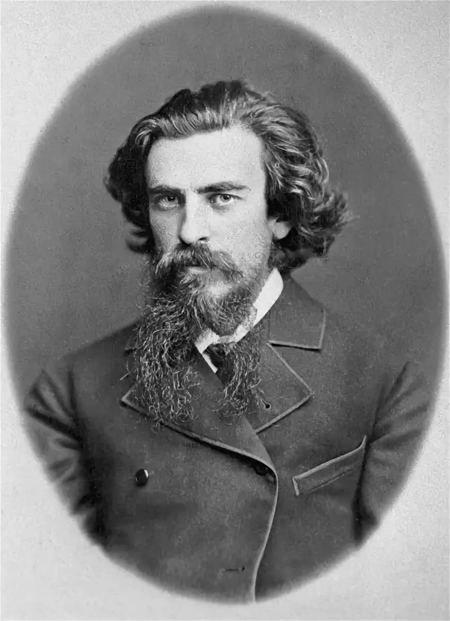

Когда речь заходит о русской религиозной философии рубежей XIX-XXвв.на ум сразу же приходит имя Владимира Соловьева.
С чем же это связано?
Впервую очередь это связано с тем, что Владимир Соловьёв создал и развивал те философские кноцепции, которые и по сей день развивают и узачают наши русские философы
